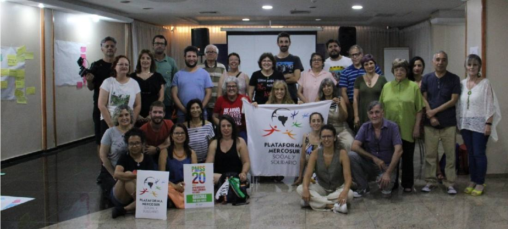
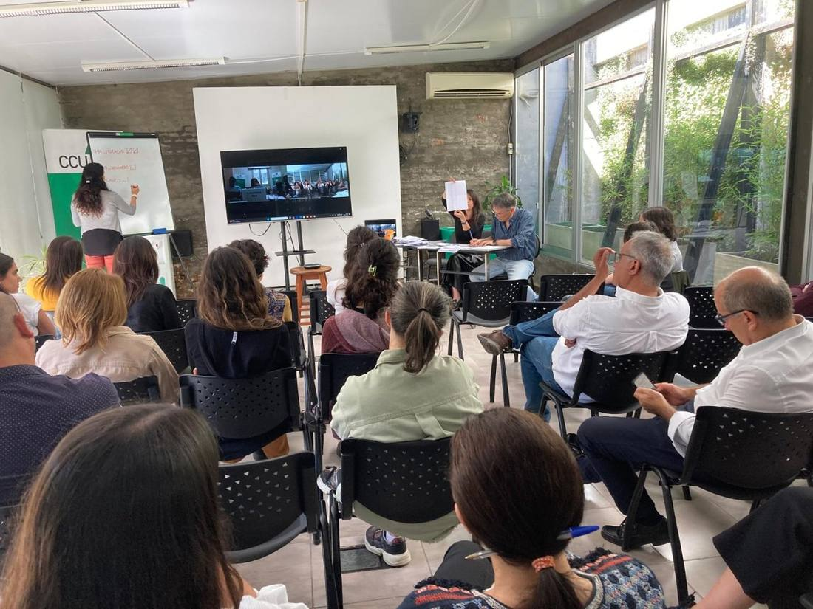

Sobre CCU
Una organización no gubernamental que, desde 1961, promueve el desarrollo de las experiencias cooperativas en todo el territorio nacional.
Presentación
El Centro Cooperativista Uruguayo es una organización no gubernamental que promueve el desarrollo de las experiencias cooperativas a nivel de todo el territorio nacional. Su motivación es el logro de la integración social de todas las personas y la mejora en la calidad de vida, contribuyendo así con el desarrollo humano y comunitario cooperativo.
CCU entiende que la mejora social está en generar espacios para la formación de grupos asociativos autogestionarios y/o cooperativos. Sus áreas de trabajo principales, además de proyectos centrales, son intervenciones en el Hábitat y en lo Rural.

Nuestra misión
Coadyuvar en la promoción del desarrollo sustentable, entendido como el proceso tendiente a una mejora de la calidad de vida de cada uno y de todos los seres, a través del apoyo de iniciativas cooperativas o asociativas que resulten viables, solidarias, replicables y articuladoras.
Esto no sólo implica la respuesta organizativa, sino la preocupación permanente por la búsqueda de alternativas, pudiéndose incluso llegar a la formulación de propuestas de políticas públicas.
Nuestra historia
Fundado en 1961, CCU ha contribuido con el desarrollo y fortalecimiento de iniciativas cooperativas, centrando su accionar en la vivienda colectiva popular, el ahorro y crédito, y la producción artesanal, industrial y agraria. Se destaca su capacidad de articular a todo el sistema cooperativo y de generar lazos con otras organizaciones del movimiento social.
- 1961
Fundación del CCU
El 11 de noviembre se funda el Centro Cooperativista Uruguayo.
- 1966
Primeras cooperativas de vivienda
Se crea el sector vivienda del CCU con tres experiencias piloto: Isla Mala, Éxodo de Artigas y Cosvam.
- 1967
Central Lanera Uruguaya
Nace una de las mayores cooperativas de segundo grado del país con apoyo del CCU.
- 1968
Ley de Vivienda 13.728
Se aprueba el marco legal que da forma al cooperativismo de vivienda en Uruguay.
- 1970
Regional Litoral Norte
Se abre la sede descentralizada de Paysandú para atender al interior del país.
- 1970
Fundación de FUCVAM
El CCU asesora y alienta la integración de las cooperativas en una organización de segundo grado.
- 1990
Programa Apícola y PROMOPES
Se consolidan líneas de trabajo con productores rurales y cooperativas de producción.
- 2010
Regularización de asentamientos
Se sistematiza el programa de realojo en viviendas dignas construidas por ayuda mutua.
- 2021
60 años del CCU
Seis décadas creando vínculos y uniendo esfuerzos junto al movimiento cooperativo.
Autoridades
Comité de gestión
- Arq. Horacio Pérez Zamora
Presidente - T.S. Noela Pandulli
Vicepresidenta - Laura Nocetti
Secretaria Ejecutiva - Arq. Verónica Carve
Coordinadora Hábitat - Ing. Agr. Andrea Politi
Coordinadora Programas Centrales / Rural
Equipo
Un equipo interdisciplinario de más de setenta personas —arquitectura, trabajo social, área contable, jurídica y notarial, agronomía y administración— distribuido entre la Casa Central de Montevideo y la Regional Litoral de Paysandú.

Área Hábitat
- Coordinación · Secretaría · Gestoría
- Sección Arquitectura
- Sección Social
- Sección Contable
- Sección Jurídica
- Equipo Realojo El Progreso
Programas Centrales / Rural
- Coordinación
- Ingeniería agronómica
- Extensión rural
Área Central
- Administración y finanzas
- Secretaría y recepción
- Gestión humana
- Comunicación
- Mantenimiento e informática
Regional Litoral
- Encargatura regional
- Arquitectura · Social · Contable · Jurídica
- Recepción y secretaría
Membresías
El CCU integra —en varios casos como miembro cofundador— redes nacionales e internacionales de promoción del cooperativismo y la economía social.
ANONG
Asociación Nacional de Organizaciones No Gubernamentales del Uruguay.
CUDECOOP
Confederación Uruguaya de Entidades Cooperativas. Miembro cofundador; actualmente ejercemos la presidencia.
ALOP
Asociación Latinoamericana de Organizaciones de Promoción. Miembro cofundador y contraparte nacional.
HIC
Habitat International Coalition. Miembro cofundador.
ACI
Alianza Cooperativa Internacional.